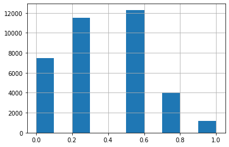

Note: If you’re fairly new to Kaggle, NLP, or Transformers, I strongly recommend you read my Getting Started notebook first, and then come back to this one.
what most of kaggle notebooks are like
There’s a lot of impressive notebooks around on Kaggle, but they often fall into one of two categories:
Exploratory Data Analysis (EDA) notebooks with lots of pretty charts, but not much focus on understanding the key issues that will make a difference in the competition
Training/inference notebooks with little detail about why each step was chosen.
What does it take to become a grandmaster of Kaggle competition
In this notebook I’ll try to give a taste of how a competitions grandmaster might tackle the U.S. Patent Phrase to Phrase Matching competition. The focus generally should be two things:
Creating an effective validation set
Iterating rapidly to find changes which improve results on the validation set.
If you can do these two things, then you can try out lots of experiments and find what works, and what doesn’t. Without these two things, it will be nearly impossible to do well in a Kaggle competition (and, indeed, to create highly accurate models in real life!)
the goals of this notebook: creating appropriate validation set and keep code concise and simple
I will show a couple of different ways to create an appropriate validation set, and will explain how to expand them into an appropriate cross-validation system. I’ll use just plain HuggingFace Transformers for everything, and will keep the code concise and simple. The more code you have, the more you have to maintain, and the more chances there are to make mistakes. So keep it simple!
OK, let’s get started…
how to download kaggle dataset to work locally
It’s nice to be able to run things locally too, to save your Kaggle GPU hours, so set a variable to make it easy to see where we are, and download what we need:
ERROR: pip's dependency resolver does not currently take into account all the packages that are installed. This behaviour is the source of the following dependency conflicts.
tensorflow-io 0.21.0 requires tensorflow-io-gcs-filesystem==0.21.0, which is not installed.
explainable-ai-sdk 1.3.2 requires xai-image-widget, which is not installed.
tensorflow 2.6.2 requires numpy~=1.19.2, but you have numpy 1.20.3 which is incompatible.
tensorflow 2.6.2 requires six~=1.15.0, but you have six 1.16.0 which is incompatible.
tensorflow 2.6.2 requires typing-extensions~=3.7.4, but you have typing-extensions 3.10.0.2 which is incompatible.
tensorflow 2.6.2 requires wrapt~=1.12.1, but you have wrapt 1.13.3 which is incompatible.
tensorflow-transform 1.5.0 requires absl-py<0.13,>=0.9, but you have absl-py 0.15.0 which is incompatible.
tensorflow-transform 1.5.0 requires numpy<1.20,>=1.16, but you have numpy 1.20.3 which is incompatible.
tensorflow-transform 1.5.0 requires pyarrow<6,>=1, but you have pyarrow 6.0.1 which is incompatible.
tensorflow-transform 1.5.0 requires tensorflow!=2.0.*,!=2.1.*,!=2.2.*,!=2.3.*,!=2.4.*,!=2.5.*,!=2.6.*,<2.8,>=1.15.2, but you have tensorflow 2.6.2 which is incompatible.
tensorflow-serving-api 2.7.0 requires tensorflow<3,>=2.7.0, but you have tensorflow 2.6.2 which is incompatible.
flake8 4.0.1 requires importlib-metadata<4.3; python_version < "3.8", but you have importlib-metadata 4.11.3 which is incompatible.
apache-beam 2.34.0 requires dill<0.3.2,>=0.3.1.1, but you have dill 0.3.4 which is incompatible.
apache-beam 2.34.0 requires httplib2<0.20.0,>=0.8, but you have httplib2 0.20.2 which is incompatible.
apache-beam 2.34.0 requires pyarrow<6.0.0,>=0.15.1, but you have pyarrow 6.0.1 which is incompatible.
aioitertools 0.10.0 requires typing_extensions>=4.0; python_version < "3.10", but you have typing-extensions 3.10.0.2 which is incompatible.
aiobotocore 2.1.2 requires botocore<1.23.25,>=1.23.24, but you have botocore 1.24.20 which is incompatible.
how fastai gives us a lot of basic imports like np, pd, plt etc; what does fastai.imports provide
A lot of the basic imports you’ll want (np, pd, plt, etc) are provided by fastai, so let’s grab them in one line:
from fastai.imports import*
Import and EDA
how to check what inside the dataset folder
Set a path to our data. Use pathlib.Path because it makes everything so much easier, and make it work automatically regardless if you’re working on your own PC or on Kaggle!
if iskaggle: path = Path('../input/us-patent-phrase-to-phrase-matching')path.ls()
how to check the distribution of the column target of the training set dataframe
Let’s look at the distribution of values of target:
df.target.value_counts()
composition 24
data 22
metal 22
motor 22
assembly 21
..
switching switch over valve 1
switching switch off valve 1
switching over valve 1
switching off valve 1
wooden substrate 1
Name: target, Length: 29340, dtype: int64
what info do we get from reading the distribution of different values of the target column of the training set
We see that there’s nearly as many unique targets as items in the training set, so they’re nearly but not quite unique. Most importantly, we can see that these generally contain very few words (1-4 words in the above sample).
Let’s check anchor:
df.anchor.value_counts()
component composite coating 152
sheet supply roller 150
source voltage 140
perfluoroalkyl group 136
el display 135
...
plug nozzle 2
shannon 2
dry coating composition1 2
peripheral nervous system stimulation 1
conduct conducting material 1
Name: anchor, Length: 733, dtype: int64
how to check the distribution of different values of the context column of training set
We can see here that there’s far fewer unique values (just 733) and that again they’re very short (2-4 words in this sample).
how to get the distribution of the different section names embedded inside the context column, and create a column named section based on the data
These are just short codes. Some of them have very few examples (18 in the smallest case) The first character is the section the patent was filed under – let’s create a column for that and look at the distribution:
B 8019
H 6195
G 6013
C 5288
A 4094
F 4054
E 1531
D 1279
Name: section, dtype: int64
how to view the distribution of continuous data or column like the column score of the training set
It seems likely that these sections might be useful, since they’ve got quite a bit more data in each.
Finally, we’ll take a look at a histogram of the scores:
df.score.hist();

There’s a small number that are scored 1.0 - here’s a sample:
df[df.score==1]
id
anchor
target
context
score
section
28
473137168ebf7484
abatement
abating
F24
1.0
F
158
621b048d70aa8867
absorbent properties
absorbent characteristics
D01
1.0
D
161
bc20a1c961cb073a
absorbent properties
absorption properties
D01
1.0
D
311
e955700dffd68624
acid absorption
absorption of acid
B08
1.0
B
315
3a09aba546aac675
acid absorption
acid absorption
B08
1.0
B
...
...
...
...
...
...
...
36398
913141526432f1d6
wiring trough
wiring troughs
F16
1.0
F
36435
ee0746f2a8ecef97
wood article
wood articles
B05
1.0
B
36440
ecaf479135cf0dfd
wood article
wooden article
B05
1.0
B
36464
8ceaa2b5c2d56250
wood article
wood article
B44
1.0
B
36468
8e1386cbefd7f245
wood article
wooden article
B44
1.0
B
1154 rows × 6 columns
We can see from this that these are just minor rewordings of the same concept, and isn’t likely to be specific to context. Any pretrained model should be pretty good at finding these already.
Training
libraries needed for creating and training models here
WARNING: Running pip as the 'root' user can result in broken permissions and conflicting behaviour with the system package manager. It is recommended to use a virtual environment instead: https://pip.pypa.io/warnings/venv
how to quite down warning messages
HuggingFace Transformers tends to be rather enthusiastic about spitting out lots of warnings, so let’s quieten it down for our sanity:
I tried to find a model that I could train reasonably at home in under two minutes, but got reasonable accuracy from. I found that deberta-v3-small fits the bill, so let’s use it:
model_nm ='microsoft/deberta-v3-small'
We can now create a tokenizer for this model. Note that pretrained models assume that text is tokenized in a particular way. In order to ensure that your tokenizer matches your model, use the AutoTokenizer, passing in your model name.
tokz = AutoTokenizer.from_pretrained(model_nm)
We’ll need to combine the context, anchor, and target together somehow. There’s not much research as to the best way to do this, so we may need to iterate a bit. To start with, we’ll just combine them all into a single string. The model will need to know where each section starts, so we can use the special separator token to tell it:
Generally we’ll get best performance if we convert pandas DataFrames into HuggingFace Datasets, so we’ll convert them over, and also rename the score column to what Transformers expects for the dependent variable, which is label:
The only bit we care about at the moment is input_ids. We can see in the tokens that it starts with a special token 1 (which represents the start of text), and then has our three fields separated by the separator token 2. We can check the indices of the special token IDs like so:
tokz.all_special_tokens
['[CLS]', '[SEP]', '[UNK]', '[PAD]', '[MASK]']
We can now tokenize the input. We’ll use batching to speed it up, and remove the columns we no longer need:
BTW, a lot of people do more complex stuff for creating their validation set, but with a dataset this large there’s not much point. As you can see, the mean scores in the two groups are very similar despite just doing a random shuffle:
Let’s now train our model! We’ll need to specify a metric, which is the correlation coefficient provided by numpy (we need to return a dictionary since that’s how Transformers knows what label to use):
We pick a learning rate and batch size that fits our GPU, and pick a reasonable weight decay and small number of epochs:
lr,bs =8e-5,128wd,epochs =0.01,4
Three epochs might not sound like much, but you’ll see once we train that most of the progress can be made in that time, so this is good for experimentation.
Transformers uses the TrainingArguments class to set up arguments. We’ll use a cosine scheduler with warmup, since at fast.ai we’ve found that’s pretty reliable. We’ll use fp16 since it’s much faster on modern GPUs, and saves some memory. We evaluate using double-sized batches, since no gradients are stored so we can do twice as many rows at a time.
We now want to start iterating to improve this. To do that, we need to know whether the model gives stable results. I tried training it 3 times from scratch, and got a range of outcomes from 0.808-0.810. This is stable enough to make a start - if we’re not finding improvements that are visible within this range, then they’re not very significant! Later on, if and when we feel confident that we’ve got the basics right, we can use cross validation and more epochs of training.
Iteration speed is critical, so we need to quickly be able to try different data processing and trainer parameters. So let’s create a function to quickly apply tokenization and create our DatasetDict:
Perhaps using the special separator character isn’t a good idea, and we should use something we create instead. Let’s see if that makes things better. First we’ll change the separator and create the DatasetDict:
That one is less clear. We’ll keep that change too since most times I run it, it’s a little better.
Special tokens
What if we made the patent section a special token? Then potentially the model might learn to recognize that different sections need to be handled in different ways. To do that, we’ll use, e.g. [A] for section A. We’ll then add those as special tokens:
It looks like we’ve made another bit of an improvement!
There’s plenty more things you could try. Here’s some thoughts:
Try a model pretrained on legal vocabulary. E.g. how about BERT for patents?
You’d likely get better results by using a sentence similarity model. Did you know that there’s a patent similarity model you could try?
You could also fine-tune any HuggingFace model using the full patent database (which is provided in BigQuery), before applying it to this dataset
Replace the patent context field with the description of that context provided by the patent office
…and try out your own ideas too!
Before submitting a model, retrain it on the full dataset, rather than just the 75% training subset we’ve used here. Create a function like the ones above to make that easy for you!”
Cross-validation
n_folds =4
Once you’ve gotten the low hanging fruit, you might want to use cross-validation to see the impact of minor changes. This time we’ll use StratifiedGroupKFold, partly just to show a different approach to before, and partly because it will give us slightly better balanced datasets.
from sklearn.model_selection import StratifiedGroupKFoldcv = StratifiedGroupKFold(n_splits=n_folds)
Here’s how to split the data frame into n_folds groups, with non-overlapping anchors and matched scores, after randomly shuffling the rows:
We can now pass this into get_trainer as we did before. If we have, say, 4 folds, then doing that for each fold will give us 4 models, and 4 sets of predictions and metrics. You could ensemble the 4 models to get a stronger model, and can also average the 4 metrics to get a more accurate assessment of your model. Here’s how to get the final epoch metrics from a trainer:
metrics = [o['eval_pearson'] for o in trainer.state.log_history if'eval_pearson'in o]metrics[-1]
0.8201874392079798
I hope you’ve found this a helpful guide to improving your results in this competition - and on Kaggle more generally! If you like it, please remember to give it an upvote, and don’t hesitate to add a comment if you have any questions or thoughts to add. And if the ideas here are helpful to you in creating your models, I’d really appreciate a link back to this notebook or a comment below to let me know what helped.